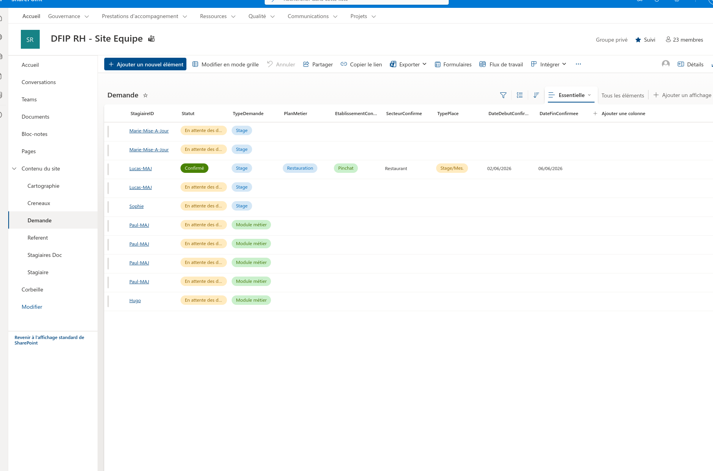
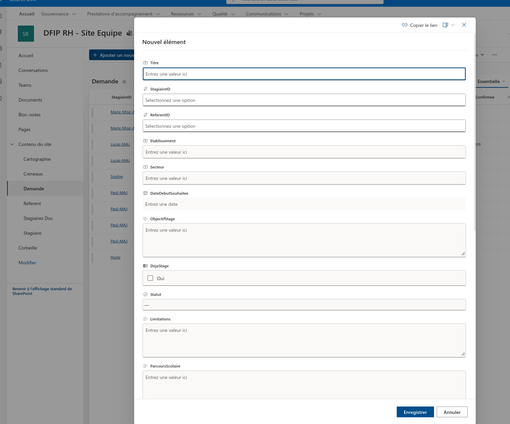
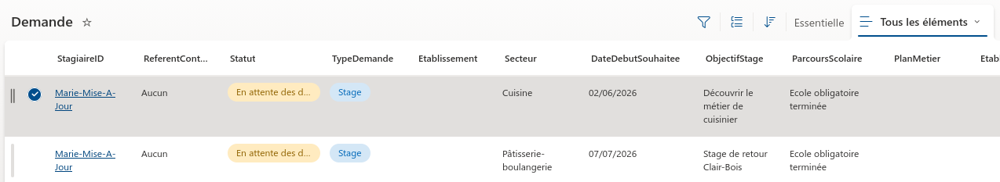
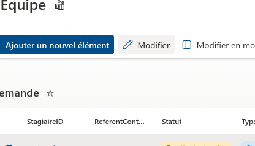
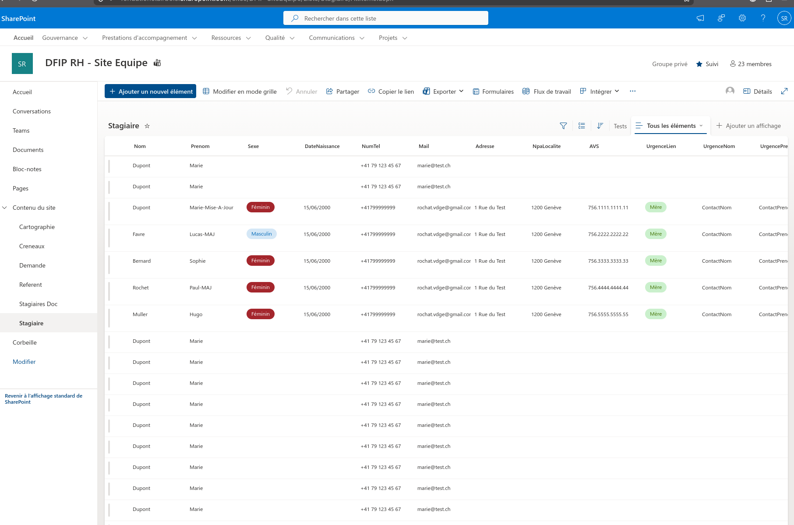
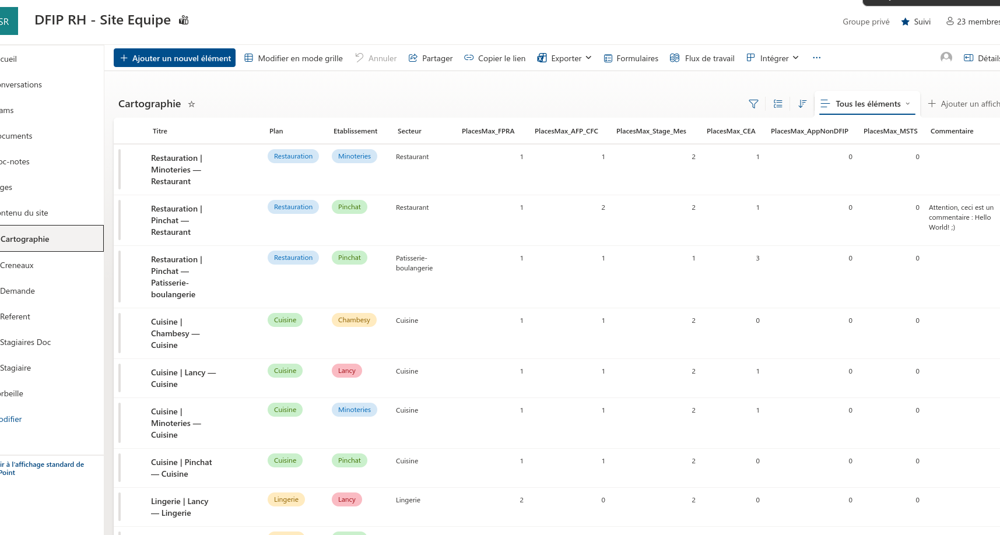

1. Gestion des stages
A. Liste « Demande »
Deux affichages disponibles en haut à droite de la liste :
Essentielle (colonnes clés uniquement — recommandé au quotidien) et
Tous les éléments (toutes les colonnes — utile pour les détails complets et pour consulter les souhaits initiaux du stagiaire, qui ne sont pas nécessairement des demandes confirmées mais simplement des préférences indicatives).
Basculer en cliquant sur l'un ou l'autre.

Vue Essentielle — affichage recommandé pour le suivi quotidien
↑ Zoom : basculer entre Essentielle et Tous les éléments
A1. Créer une nouvelle demande
1
Cliquez sur + Ajouter un nouvel élément (barre bleue en haut).
2
Remplissez les champs : StagiaireID TypeDemande Secteur DateDebutSouhaitee ObjectifStage ParcoursScolaire
3
Laissez le Statut sur « — » → cliquez Enregistrer.
⚠ Le stagiaire doit déjà exister dans la liste Stagiaire avant de créer la demande (voir B1).

Formulaire « Nouvel élément » — liste Demande
A2. Modifier ou confirmer une demande
1
Cliquez sur la ligne concernée dans la liste — elle se sélectionne (case bleue à gauche).
2
Cliquez sur Modifier (icône crayon) qui apparaît dans la barre du haut.

Clic sur la ligne → case bleue à gauche = ligne sélectionnée

Cliquez sur « Modifier » (crayon) dans la barre du haut
3
Le panneau Propriétés de l'élément s'ouvre à droite → modifiez les champs souhaités.
Pour confirmer un placement : remplissez également PlanMetier EtablissementConfirme SecteurConfirme TypePlace DateDebutConfirmee DateFinConfirmee
— puis changez le Statut → Confirmé → Enregistrer.
✓ La cartographie se met à jour automatiquement dans l'heure après tout passage en statut Confirmé.
B. Liste « Stagiaire »
B1. Créer un nouveau stagiaire
1
Menu gauche SharePoint → Stagiaire.
2
Cliquez + Ajouter un nouvel élément → remplissez Prénom Nom AVS et les autres informations → Enregistrer.
3
Revenez dans Demande pour créer la demande associée (A1).

Menu gauche → Stagiaire
2. Paramétrage de la cartographie
A. Liste « Cartographie » SharePoint
La liste Cartographie définit la structure de la carte : quels établissements existent, quels plans métiers, et combien de places maximum pour chaque type de stage. Modifier cette liste met à jour les capacités affichées dans la cartographie dans l'heure.

Liste Cartographie — chaque ligne = un établissement × un plan métier
Colonnes clés
·
Plan Etablissement Secteur — identifient l'emplacement sur la carte.
·
PlacesMax_FPRA PlacesMax_AFP_CFC PlacesMax_Stage_Mes PlacesMax_CEA PlacesMax_AppNonDFIP PlacesMax_MSTS — nombre de places disponibles par type.
·
Commentaire — note libre visible dans le détail.
Modifier les capacités d'un établissement
1
Menu gauche → Cartographie.
2
Cliquez sur la ligne à modifier → Modifier (crayon) → panneau latéral.
3
Mettez à jour les colonnes PlacesMax_… souhaitées → Enregistrer.
✓ La cartographie visuelle reflète les nouvelles capacités dans l'heure.
3. Cartographie visuelle
A. Accès
A1. Ouvrir la cartographie
1
Ouvrez ce lien dans votre navigateur :
clairbois-dfip.github.io/clair-bois-calendrier/#carto
2
Entrez le mot de passe communiqué par l'équipe → Connexion.
B. Lire la carte
B1. Code couleur des places
Vert — place libre
Orange — libre aujourd'hui, réservée à une date future
Rouge — occupée en ce moment
B2. Voir les détails d'un placement
1
Survolez un siège orange ou rouge → prénom du stagiaire + dates s'affichent.
2
Cliquez sur un plan métier pour voir le détail complet de toutes ses tables.
La cartographie est en lecture seule. Toute modification se fait depuis les listes SharePoint Demande (placements) ou Cartographie (capacités).